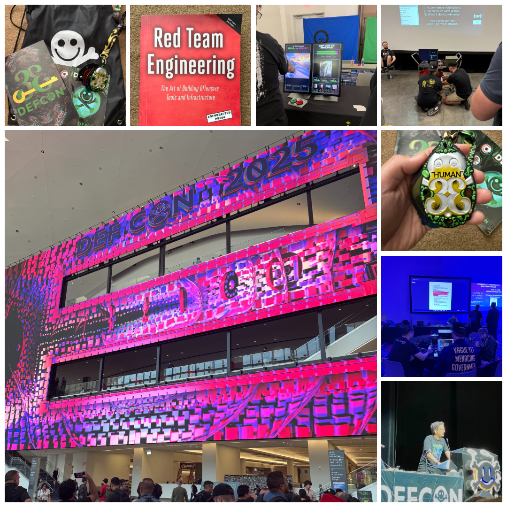

DEF CON 33
This was my first DEF CON. My first time stepping into the Las Vegas Convention Center’s West Hall, surrounded by thousands of hackers, builders, and defenders. It felt like walking into a living lab. Villages, creator stages, hallway cons, lockpicks, soldering irons, and constant chatter. Every corner buzzed with people building, breaking, and teaching. Lines turned into conversations, and conversations turned into ideas. That mix of curiosity and generosity is what hooked me.
The big picture: why I fell in love with this field again
Hacking as a craft. Instead of slides about trends, I saw working exploits, defensive playbooks, and real systems under test. Cars, clouds, hospitals, and airports. You do not just hear “attack surface”; you touch it.
Community as a multiplier. Mentors helped first-timers, village staff made space for questions, and strangers shared tools and failures without ego. It is hard to feel like an outsider when everyone nudges you to try the next thing.
Support that is real. Beyond talks, the how-to culture stood out. “Here is the repo,” “Here is the dataset,” “Here is how we validated it.” The signal was not just what works, but how to reproduce it responsibly.
What stood out this year
-
AI moved from hype to hands-on. The headline demos were not slideware. Autonomous systems actually found issues and proposed fixes. The responsible pattern is clear: let AI go wide and fast, keep a human on the loop for risk, context, and approvals.
-
Identity and APIs are today’s soft underbelly. Many storylines traced back to fragile authentication and authorization and sprawling integrations. Everything is an API now. Yours, your vendors’, and their vendors’. Blast radius is a design problem, not just a detection problem.
-
Reality-based drills beat theory. Blue and purple team content leaned into scenario work. Live crisis simulations, cloud misconfiguration gauntlets, and ICS or OT puzzles with real constraints. This is training you can bring home on Monday.
-
Secure defaults matter. A lot of hallway talk focused on shifting left in practical ways. Memory-safe languages for new services, phishing-resistant MFA, short-lived credentials, and designing out entire classes of foot-guns.
A few moments that changed how I think
-
Creator stages lowered the barrier to discover great talks. As a newcomer, this made it easy to wander, learn something unexpected, and meet the people behind it.
-
Hands-on villages turned concepts into muscle memory. Whether it was cloud, car, aerospace, or blue team content, the pattern was the same. Here is the system, here is the failure mode, here is how we measured the fix.
-
Hallway learning was constant. I watched someone teach a stranger to solder a badge in ten minutes, then swap detection tips about MFA fatigue attacks. That blend of hardware and SOC talk felt very DEF CON.
What I am bringing back
-
Agentic AI with guardrails. Small, focused agents for triage, phishing, and config checks, with clear autonomy levels, approvals, and full run logging.
-
API and identity blast radius. Map critical APIs, trim privileges, watch risky admin actions, and review vendor access on a schedule.
-
Secure defaults that remove whole classes of bugs. Passkeys for admins and vendors, memory-safe languages for new services, and short-lived credentials by default.
-
Software supply chain integrity. SBOMs, signed builds, provenance checks in CI, and continuous dependency monitoring.
-
Cloud misconfig prevention. Golden baselines as code, continuous drift detection, and automatic guardrails for internet exposure.
-
Privacy and data governance for AI. Least-privilege retrieval, redaction where possible, scoped retention, and strong audit trails.
-
Community habits that compound. Share playbooks, contribute small tools, mentor first-timers, and turn hallway insights into internal docs.
Closing
Between the hands-on hacking, the generosity of the community, and the bias toward sharing how to do the work, DEF CON 33 reminded me why I love security. It is a craft you hone, with people who want you to get better, solving problems that actually matter.
Thank you to the organizers, goons, village crews, speakers, and the many folks who answered my rookie questions with patience. For a first-time attendee, it was unforgettable. It also gave me a roadmap for what to build, measure, and share next year.
